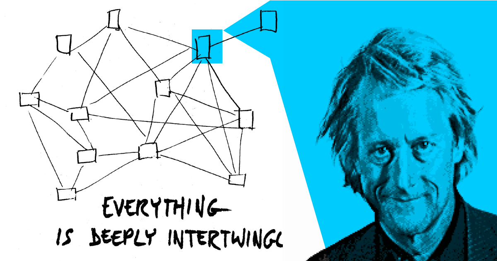

Seeing the Glue: Why Ted Nelson's 60-Year Quest Still Matters
August 11, 2025

Back in 2007, I was building this project that grabbed raw XML RSS feeds and turned them into live tickers on a webpage. Simple concept, but I kept running into problems with attribution and tracking where information actually came from. My department chair, who was an MIT Media Lab grad, watched me struggle with this for weeks.
"You know what?" he said one day. "There's this guy who's been thinking about exactly this problem for like forty years. You should look up Ted Nelson."
That introduction changed everything for me. Now, as AI-generated content explodes everywhere and we're all trying to figure out what's real and what's not, Nelson's ideas feel more important than ever.
The Guy Who Never Gave Up
Ted Nelson gets called a lot of things. Visionary. Pioneer. The creator of the longest-running vaporware project in computing history. For over 60 years, he's been working on something called Project Xanadu. It's supposed to be this system where documents stay connected to their sources, where you can embed live content from other places, where everything has proper attribution built right in.
Most people think Xanadu is a joke. Sixty years and still not "done"? Come on.
But here's what I see: a guy so convinced he's right that he's spent his entire career proving it. Nelson truly believed what he was doing. He built prototypes, ran tests, kept refining his ideas. He never stopped working on it because he knew something the rest of us are just starting to figure out.
What Nelson Saw Coming
Here's what Nelson figured out that nobody else did: all information was going to "go wild." Digital stuff gets copied, remixed, shared, stolen. He saw this coming decades before the internet even existed. He knew that once information became fluid, we'd have a massive problem with attribution and truth.
Two things he predicted feel especially relevant now:
Transclusion: Instead of copy-paste, you'd have living links back to the original source. Quote someone and that quote stays connected to where it came from. If they update it, your quote updates too.
Micropayments: Tiny automatic payments flowing back to creators whenever their work gets referenced or built upon.
Sound familiar? We're drowning in AI content that remixes human-created stuff with zero attribution or compensation. Nelson saw this exact problem coming in the 1960s.
Fast Answers vs Understanding the Connections
Our culture is all about speed now. We want answers fast. AI chatbots like Claude and ChatGPT can give us information instantly. But here's what I've noticed working with AI tools: we're optimizing for "getting answers" instead of "seeing the glue."
Nelson wanted something different. He wanted a visual space where you could see how ideas connect to each other and to their sources. Not just facts, but the relationships between facts. The context. The trail back to where things actually came from.
Today's AI can give you sources if you ask. But it doesn't always do that upfront. Sometimes quotes that look real aren't quite right, and you have to catch those yourself. We trust these systems because questioning them takes extra work.
This is exactly what Nelson was trying to prevent. He believed that seeing the connections visually was essential for how humans actually think and learn.
Computers Should Help Humans Think Better
What I love most about Nelson is his core belief: technology should augment humans, not replace them. Computers are thinking tools. They should help us manage complexity, see patterns, make connections we couldn't make on our own.
This hits home for designers today. Everyone's worried about AI replacement. But Nelson's approach offers a different path. Instead of asking "What can AI do that humans can't?" we should ask "How can AI help humans do what they do best, but better?"
In my own work, this distinction is everything. AI handles the coding grunt work, but I make the creative decisions. I recognize user needs. I understand context. The technology amplifies my 18 years of experience rather than replacing it.
The UX Problem We Still Haven't Solved
The biggest gap between Nelson's vision and what we have now isn't technical. We have the tech to track sources and show connections. The problem is user experience.
Most people don't check sources because it's a pain. We trust AI outputs partly because questioning them requires extra clicks and effort. Nelson understood that if you want people to engage with source material, you have to make it visually obvious and effortless.
Imagine if every AI response came with a live visual map showing exactly where each piece of information came from. Not hidden in footnotes, but right there as part of how you read the content. You could see at a glance which sources were primary vs secondary, recent vs old, institutional vs individual.
This is the kind of human-centered thinking Nelson has been pushing for decades.
Why "Failure" Is Actually Success
Critics point to Xanadu's 60-year timeline as proof of failure. I see something different. Nelson spent his career refusing to compromise on what he believes humans actually need from information systems. While everyone else built systems for corporate profits or technical elegance, Nelson kept asking: "What would truly serve human thinking and creativity?"
His work influenced everything. The World Wide Web. Wikis. Modern AI systems. The fact that we haven't fully built his vision doesn't mean he was wrong. It means we still have work to do.
What This Means for AI and Design
As we figure out this AI revolution, Nelson's human-centered philosophy offers crucial guidance. Instead of building systems that replace human judgment, we should focus on amplifying human capabilities:
- Make source attribution visible and immediate, not hidden
- Help users see connections and context, not just isolated facts
- Give people tools to verify and understand information flows
- Build systems that compensate and credit original creators
Nelson's vision isn't just about fair compensation. It's about maintaining the human connections that make information meaningful.
Augmentation, Not Replacement
The design community's concerns about AI miss the point Nelson understood decades ago. The goal isn't to build machines that think like humans. It's to build tools that help humans think better.
Nelson's 60-year quest represents something rare in tech: unwavering commitment to human-centered design principles. His "vaporware" project isn't a failure. It's a north star, reminding us that the most important question isn't "Can we build it?" but "Should we build it, and will it actually serve human needs?"
As I keep experimenting with AI-augmented design, I come back to Nelson's fundamental insight: technology is at its best when it makes human creativity and intelligence more powerful, not when it tries to replace them.
We're still far from Nelson's vision of truly interconnected, attributed, human-centered information systems. But maybe that's the point. Maybe the journey toward better human-computer collaboration matters more than any single destination.
Ted Nelson is 86 now and still working on it. Still prototyping, writing, advocating for the right way to handle human information. That kind of dedication to human-centered principles is exactly what our AI-augmented future needs.
The guy never gave up on believing that people are the real deal here, and technology should be made to augment humans first. That's a lesson worth remembering as we build whatever comes next.
About the Author
Matthew White is a strategic designer exploring the intersection of human creativity and artificial intelligence. His work focuses on demonstrating how design thinking can be amplified—not replaced—by emerging technologies.
You can explore more of his AI-augmented design experiments at tchr01.github.io/ux.
Background Image Note: The background image is from Ted Nelson's paper "The Xanadu ideal: a completely different system," illustrating his vision of interconnected information structures that would preserve attribution and context—concepts that remain relevant as we navigate our current AI-augmented information landscape.